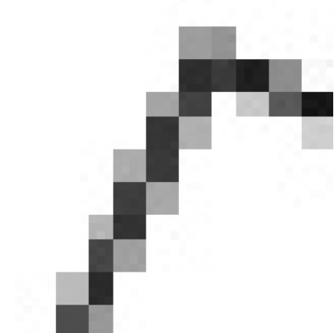

void setup() {
size(150, 150);
background(255);
smooth();
}
void draw(){
pushMatrix();
fill(200, 0, 0)
translate(30, 10);
rotate(radians(45));
scale(1.0);
rect(0, 0, 20, 20);
popMatrix();
}

An image rendered without a call to smooth() has blocky staircase like pixels on angled lines.
An image rendered with a call to smooth() still has staircase like pixels on angled lines but the blockiness is softer.
Newer versions of Processing do not require explicit calls to smooth().
Processing reference for smooth